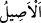

mü’minlerin rûhları “ve yerde bulunanlar da” melekler ve mü’min insanlar ile cinler
de “onların gölgeleri de sabah akşam ister istemez” hem sıkıntı hem de bolluk
zamanında gönüllü olarak ve sıkıntı ve zarûret zamanında istemeye istemeye “sadece
Allah’a secde ederler.” Buradaki secde hakîkî mânâda, yani alnın yere konması
mânâsında kullanılmıştır.
“
” sabah demektir. “
” ise güneşin zevâlinden batışına kadarki zamandır.
Nitekim Bahru’l-ulûm’da böyle denilmektedir. el-Kevâşî’de ve diğer bazı eserlerde
şöyle denilir: “el-Asîl” İkindi ile Güneş’in batması arasındaki zamandır.
“
” daki “be” harfi “fî” mânâsınadır. Yâni “Bu iki vakitte secde ederler”
demek olur. Bu iki vakitten maksad, devamlı secde etmektir. Çünkü ister hakîkî mânâsı
kasdedilmiş olsun, ister boyun eğme ve teslim olma mânâsı kasdedilmiş olsun secde,
mutlaka bu iki vakte has değildir. Gölgelerin bir yerden başka bir yere doğru eğilerek
güneşin düşmesiyle uzaması, güneşin yükselmesiyle de kısalmak suretiyle boyun
eğmesi, bazen olup bazen olmayan bir şey değildir. Aksine gölgeler, Allah Teâlâ’ya
bütün vakitlerde boyun eğmekte ve teslim olmaktadır. İşte böyle olmasına rağmen
sadece iki vaktin zikredilmesi, gölgelerin bu iki vakitte daha büyük ve çok olması
hasebiyledir.
İstemeden yapılan secde, kâfir, münâfık ve şeytanların yaptığı secdedir. Gönüllü
olarak yapılan secdenin müslüman olarak doğanların yaptığı secde olduğu, istemeden
yapılanın ise, dâru’l-harbden esir alınanların isteksizce yaptıkları secde olduğu da
söylenir.
Bir hadiste: “Rabbin, cennete zincirlerle çekilip götürülen bir topluluğa hayret
eder.”[119] buyrulmuştur. Burada işâret vardır ki muhabbet ve vefâ ehli bazı mü’minlerin
cennete girmeleri taleb edilir. Onlar ise hizmete devam etmek gâyesiyle bunu istemezler.
Bu yüzden onların ayaklarına altın zincirler vurularak cennete götürülürler.
Kemâl Hocendî der ki:
Bize tûbâ gamı ve cennet temennîsi yoktur
Ehil olmayan insanın himmeti alçak olur
Göklerde ve yerde bulunanların gölgeleri de gölge sahiplerine tâbî olarak secde
ederler. Bu secde ile secdenin mecâzî mânâsının kasdedilmiş olması da mümkündür. Bu
ise bütün varlıklar isteseler de istemeseler de Allah Teâlâ’nın kendileri hakkında irâde
ettiğine boyun eğmeleridir. Buna göre gölgelerinin secde etmesi, uzayıp kısalarak ve bir
yerden başka bir yere intikal ederek Allah Teâlâ’nın tasarruflarına boyun eğmesi
mânâsına gelmiş olur. Hâsılı, bütün varlıklar Allah’ın hüküm ve takdirine râm olmuştur.
et-Te’vîlâtü’n-Necmiyye’de şöyle der: “Gölgeleri de secde eder.”, nefisleri de secde
eder, demektir. Çünkü nefisler, ruhların gölgeleridir. İsteyerek secde etmek ise
nefislerin harcı değildir. Çünkü isteyerek secde etmelerini Rab Teâlâ’nın merhameten